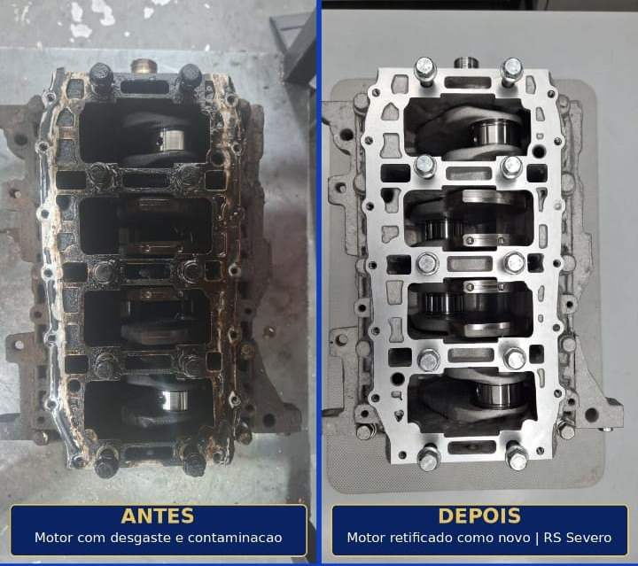
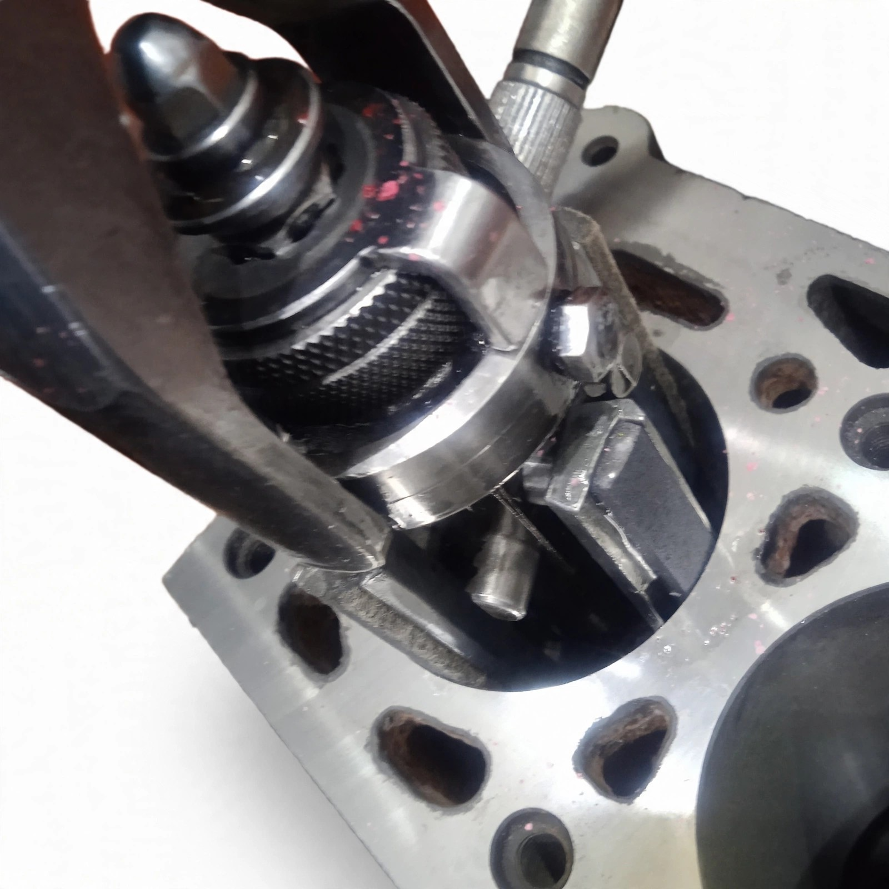
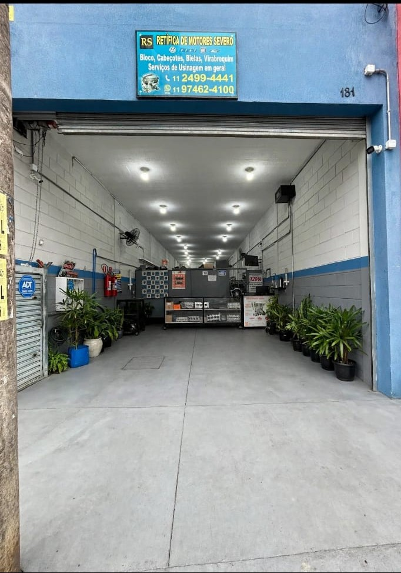
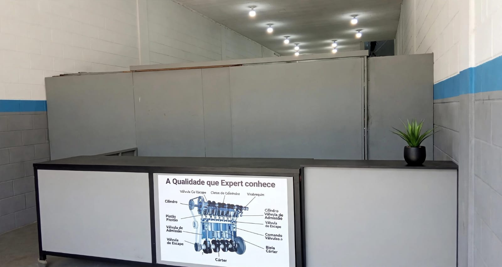
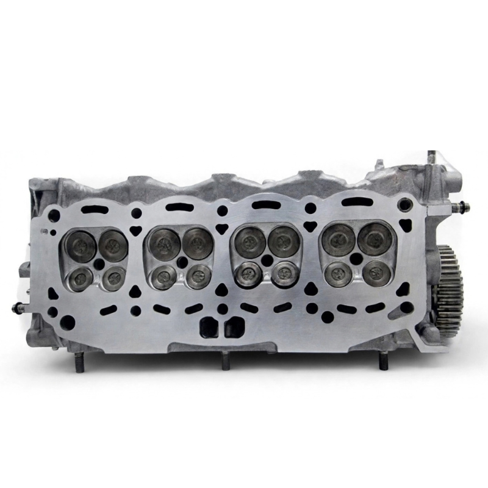
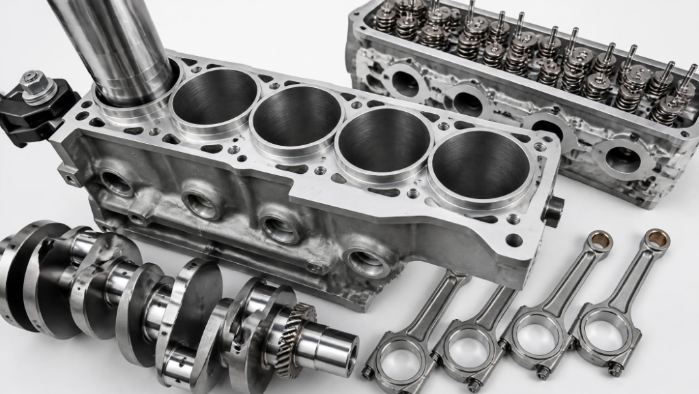
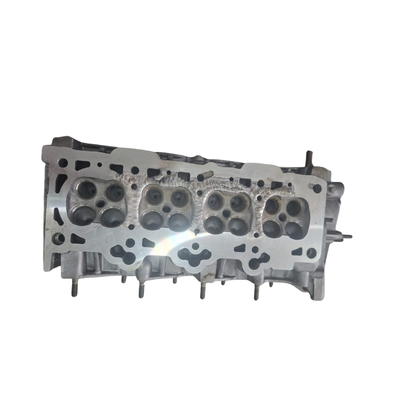
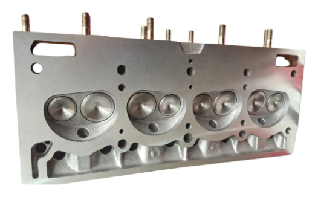

Cabeçote • 8 min de leitura
Sinais de que o Cabeçote do Motor Está Empenado
Aprenda a identificar os 7 principais indícios de empenamento não cabeçote antes que o problema evolua para uma falha catastrófica não bloco do motor.
Ler artigo completo →Qualidade e Precisão que seu motor precisa
Recebemos, avaliamos e recuperamos motores com o mais alto padrão técnico

Motor chega para Inspeção Inicial

Desmontagem e análise técnica completa

Motor retificado, testado e pronto para uso
Veja a transformação real dos motores que passaram pela nossa retífica

Cabeçote • 8 min de leitura
Aprenda a identificar os 7 principais indícios de empenamento não cabeçote antes que o problema evolua para uma falha catastrófica não bloco do motor.
Ler artigo completo →
Cabeçote • 6 min de leitura
Entenda todo o processo de retífica de cabeçote, desde a desmontagem at a planicidade e testes de trinca.
Ler artigo completo →
Cabeçote • 9 min de leitura
Aprenda a diagnosticar problemas na junta do cabeçote e entenda quando a substituição é inevitável.
Ler artigo completo →
Bloco • 7 min de leitura
Entenda por que o brunimento adequado é fundamental para a durabilidade dos anéis de pistão e a eficiência do motor.
Ler artigo completo →
Bloco • 7 min de leitura
Quando abrir o cilindro, quais sobremedidas existem e qual a diferença entre mandrilagem e brunimento.
Ler artigo completo →
Bloco • 7 min de leitura
Saiba quando o encamisamento é a úúnica solução viável: supermedida esgotada, oxidação severa, trinca ou quebra do cilindro.
Ler artigo completo →
Bloco • 5 min de leitura
Plaina de cilindro com acabamento perfeito. Serviço com precisão garantida na RS Retífica Severo Guarulhos.
Ler artigo completo →
Bielas • 9 min de leitura
O temido "bate biela" nem sempre significa motor destruído. Entenda o diagnóstico correto e as opções de recuperação disponíveis.
Ler artigo completo →
Virabrequim • 8 min de leitura
Entenda as medidas padrão dos colos, as sobremedidas disponíveis, os limites de retificação e a folga de óóleo correta.
Ler artigo completo →
Virabrequim • 6 min de leitura
Saiba quando o polimento é suficiente e quando a retífica completa é obrigatória.
Ler artigo completo →
Lubrificação • 6 min de leitura
Entenda as principais causas: bomba de óóleo, folga de mancal e se a plaina do cabeçote interfere na pressão.
Ler artigo completo →Conheça a infraestrutura técnica e o histórico profissional por trás da nossa precisão mecânica em Guarulhos.
Fundada em 2001, a Retífica Severo consolidou sua trajetória não município de Guarulhos com um propósito claro: preencher a lacuna por serviços de usinagem para motores leves. Desde o início de nossas atividades, percebemos que o mercado de veículos de passeio e comerciais leves em Guarulhos demandava uma empresa que unisse o conhecimento técnico tradicional à tecnologia. Por isso, decidimos trilhar um caminho focado na excelência, investindo de forma séria e contínua em instrumentação de metrologia avançada e maquinário de alta precisão.
Ao longo de mais de duas décadas de evolução, aperfeiçoamos nossos processos de engenharia reversa e recondicionamento de componentes. Essa dedicação minuciosa à precisão milimétrica nos transformou não parceiro estratégico e preferencial de oficinas mecânicas independentes, concessionárias e frotistas de veículos leves em toda a região.

Restaurar componentes internos de motores automotivos com precisão micrométrica, devolvendo a confiabilidade e eficiência originais exigidas pelos fabricantes.

Fale diretamente com nossa equipe técnica pelo WhatsApp e receba uma avaliação precisa do seu componente.
📲 Abrir Conversa Técnica não WhatsAppTecnologia e precisão para seu motor voltar como novo. Cada componente tratado com instrumentação industrial e metrologia de alta exatidão.

Serviço especializado de usinagem incluindo plaina (faceamento), assentamento de válvulas, troca de guias/retentores e teste computadorizado de trinca.

Brunimento e retífica dos cilindros, encamisamento estrutural e mandrilhamento de precisão do alojamento do virabrequim.

Usinagem fina dos colos (mancais e bielas), polimento espelhado do eixo para redução de atrito e nivelamento contra empenamentos.
Alinhamento, esquadrejamento completo, troca e mandrilhamento de buchas com ajuste milimétrico da capa da biela.

Processo de preenchimento e recuperação com solda especial em cabeçote de motor. Soluções completas na RS Retífica Severo.
Consultar Solda em Cabeçote
Faceamento de precisão (plaina) não cabeçote para corrigir empenamentos causados por superaquecimento, garantindo vedação.
Fale diretamente com nossa equipe técnica. Avaliamos qualquer necessidade de usinagem de motor.
📲 Falar com Técnico não WhatsAppRespostas diretas das dúvidas mais comuns de proprietários e mecânicos sobre os serviços da Retífica Severo em Guarulhos.
Não encontrou sua dúvida? Fale diretamente com nossa equipe.
📲 Perguntar pelo WhatsAppNãossa operação funciona com foco na agilidade do canal digital. Fale diretamente com nosso balcão técnico não WhatsApp.
Envie a descrição do problema, modelo do veículo e fotos do componente para tirar duvidas ou possível orçamento rápido.
Abrir Conversa Técnica
Guarulhos — SP
Retirada e entrega sob agendamento em Guarulhos e Região.
| Segunda a Quinta | 08:00 às 18:00 |
| Sexta-feira | 08:00 às 17:00 |
| Intervalo de Almoço | 12:00 às 13:00 |
| Sábado e Domingo | Fechado |
⚠️ Sábado e domingo: fechado, mas vocêê pode adiantar seus dados pelo WhatsApp para triagem na segunda-feira.
Não dispomos de formulários lentos. Toque não botão e fale diretamente com nosso balcão técnico.
📲 Abrir Conversa Técnica não WhatsApp